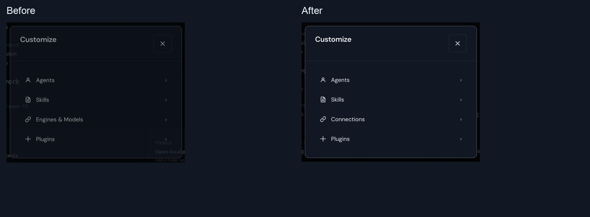
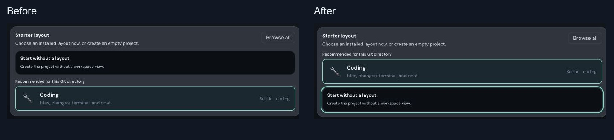
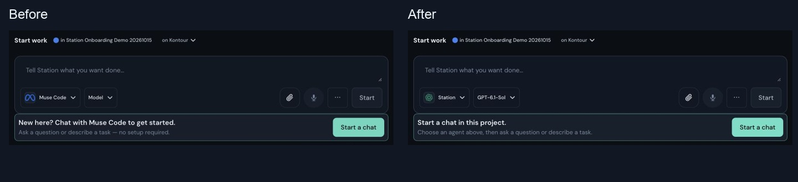
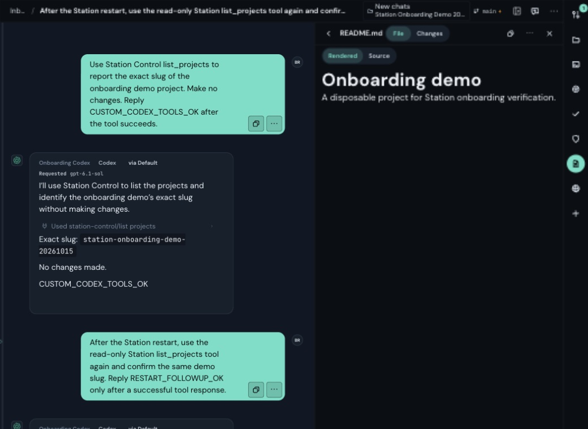
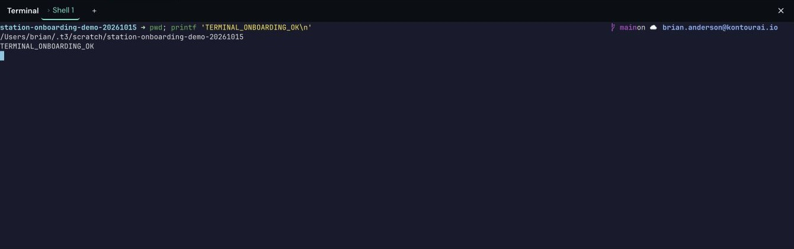
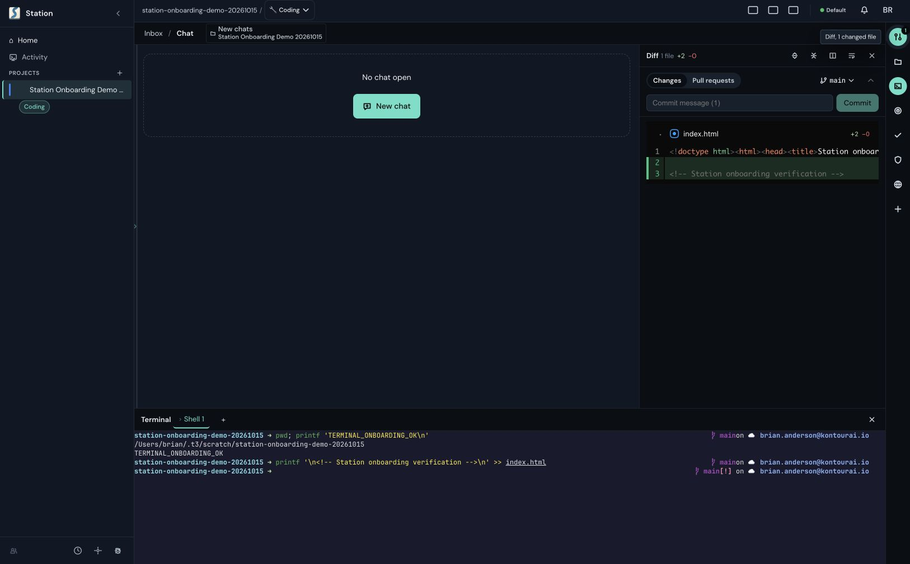
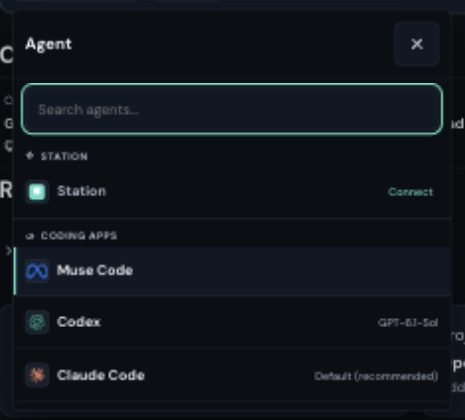
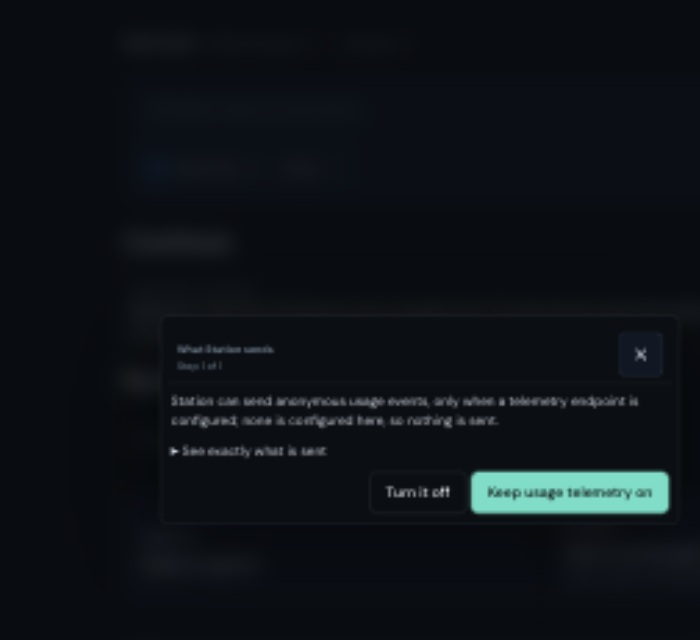
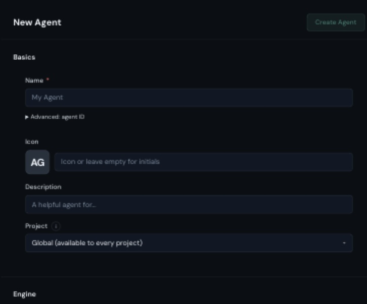
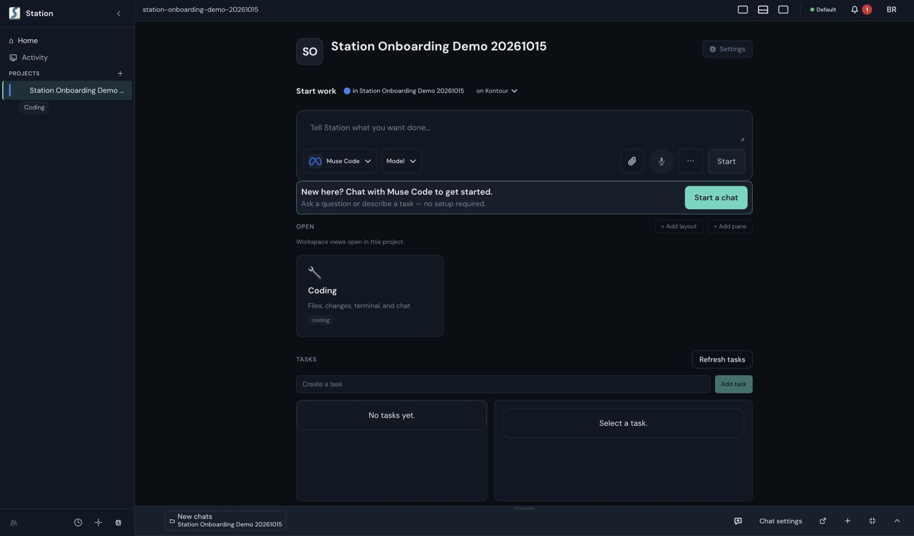

The guide named a destination the menu did not name
Renamed that existing menu destination Connections and named Customize in the README and guide.

Historical first-pass report. See round two for substantive fixes, mobile analysis and current limitations.
Live macOS walkthrough from the documented source install, with a fresh Station home and an existing signed-in Codex account. Three small UI fixes and a concise Codex guide are implemented locally. Broader changes below are proposals for discussion.
Renamed that existing menu destination Connections and named Customize in the README and guide.

Moved the detected Git recommendation above the empty-layout choice. Selection and Git detection behavior are unchanged.

The invitation now refers to this project and tells the user to choose an agent above. The separate duplicate action remains a recommendation.

Actual application screenshots, cropped to the relevant areas. Baseline recreated from a2668a0eb80; fixed UI from ffd5ea54306. Browser heights differ. The selected Agent also differs after explicit configuration; the wording fix itself does not change agent selection.
| Step | Observed result |
|---|---|
| Documented source install | Node 24.19.0 → npm run dependencies:ci → ./station start, with documented isolated home/instance/ports. |
| Existing Codex account | Automatically detected; signed in. A live chat read the demo README and returned its heading. |
| Project + Coding | Created a disposable Git project, selected Coding, opened Files and rendered README.md. |
| Station assistant | Selected Codex in Built-in agent engine, saved, started Station chat. Its Station Control list_projects returned the demo slug. |
| Custom Codex agent | Created Onboarding Codex, selected project/model, added read-only Station controls. A live list_projects succeeded. |
| Restart + follow-up | Reopened the saved custom-agent conversation after rebuilding/restarting. A second real list_projects succeeded and confirmed the same slug. |
| Terminal | pwd returned the demo folder; TERMINAL_ONBOARDING_OK printed from the real PTY. |
| Diff | A harmless comment added to index.html in the demo terminal appeared as 1 changed file, +2 lines. No commit or push in the demo. |

The saved custom Codex chat shows the successful Station tool call alongside the real project README.


Reuse the existing engine picker and readiness checks, preserve the originating project/draft, then finish in one useful chat. Existing backlog owners #286 and #75 already cover this direction; their historical limitations are not current proof.
The Station picker said No enabled LLM provider connection is configured, although Codex was signed in and could chat.
Proposed: Offer Use Codex to power Station at this point, with explicit confirmation using the existing engine picker. Do not imply an API key is required. The guide now explains the current Settings → General → Built-in agent engine → Change… → Codex → Use this engine → Save path.
Reuse #75 and #286; source inspection and one live setup only. A second baseline later bound automatically, so startup timing/default selection needs a separate reproduction.

A fresh home opened with a telemetry decision and an implicitly selected Muse Code. Model was not reported. The onboarding did not establish a real reply or a tool result.
Proposed: Offer Choose your app → Open a folder → Send your first request. Explain why a particular app is suggested. End with a real reply and an optional read-only Station tool check, with consent for model use.
Existing first-chat owner #286. Do not recreate engine discovery or materialization.

The first Home showed 172 outside conversations, including internal title/branch-generation prompts. Coding’s inbox could be dominated by unrelated work.
Proposed: Explain attached-session discovery and offer a project-first inbox on first use. Let users opt into the broader history without silently deleting or hiding retained work.
The new Agent form required scrolling through identity, engine, account, model, instructions, tools and advanced controls. Codex’s instructions field was retained but disabled with a capability warning. Expanding Station exposed a 93-tool catalog.
Proposed: Start with Name + Codex + Project and a model default. Keep the existing read-only tool preset; offer an explicit Test chat / Test Station tools action after saving. Put unsupported fields and the full tool checklist behind details.

Choosing Coding at creation still opened the project summary, then required another click on Coding. The initial form also asks for a default environment and project identity.
Proposed: Offer Create and open Coding. Keep name inferred from the folder and move optional metadata/environment choices into details.

Files, Diff and Terminal were discoverable through the right rail, but a new user must hover or explore. Chat, the inbox, dock regions, the project page and the Coding layout expose several ways to start or move work.
Proposed: Show labels for Files, Changes and Terminal on first use, with a dismissible explanation of where each opens. Consolidate duplicate Start a chat actions around the shared composer.
At 1280 × 800 the content-view was 760 px high with 1171 px of content. The chat input could be below the fold; focusing terminal controls scrolled the whole workspace.
Proposed: Give the workbench a bounded available height and independent chat/file/terminal scroll regions. Verify with long conversations, inbox open/closed and the on-screen keyboard before a layout fix.
Observed geometry, not an attributed CSS root cause. No speculative stylesheet change included.
The same local setup displayed Default, on Kontour, Station, Codex, via Default, and Requested gpt-6.1-sol. These mix Station destination, profile, Agent, engine and model.
Proposed: Use one compact summary: Station assistant · powered by Codex · on this computer. Keep provider-reported versus requested model evidence available in details.
After signing Chrome into the baseline on a second port, the first tab reported that Default was not accepting the device. It recovered after signing into the first instance again.
Proposed: Qualify same-host multi-instance browser sessions. Cookie scope is a plausible cause: runtime-http uses the station-device cookie name, and browser cookies do not isolate by port. Use separate browser profiles during development until the owner confirms the fix.
Observation plus source-based hypothesis; not a cross-account security finding and not fixed here.
Focused UI/documentation suites, public documentation hygiene and lint passed after the recorded corrections. Final qualification is reported separately in the handoff; this report does not turn an indeterminate receipt into a pass.
Local code and guide commits are on fix/onboarding-codex-20261015. The live test instance is onboarding-codex-20261015, UI port 5474, server port 4242. The separate baseline instance was stopped.
Fresh Station state was tested, with pre-existing host CLI credentials. Fresh OAuth sign-in, published installers, Windows/Linux, native/mobile, hosted checks and release delivery remain NOT_VERIFIED. Listing projects proves that read-only tool, not all 93 Station controls.
The original first-run guide is 792 lines and interleaves installation choices with advanced journeys. This branch adds a short Codex-first route at its start. Splitting the longer guide into progressive topics is still a recommendation.
No screenshot mockups are presented as fixes. Before/after crops retain their full source captures and digests in capture-provenance.json. Initial T3 screenshots are 1280 × 800; matched Chrome captures are 1626 px wide, 953/1009 px high. Browser-control timeouts and a transient same-host instance authentication disruption were recorded separately from product chat results.
Initial focused run: 500 assertions passed; one documentation freshness assertion failed. After recording the review notes, that 32-test suite passed. ci:fast then caught two new public-site links, which were corrected and re-reviewed. The next ci:fast command exited zero internally, including all 14 typecheck lanes, but its wrapper correctly marked the receipt indeterminate because screenshot report files were created during execution. A final frozen-tree qualification follows.